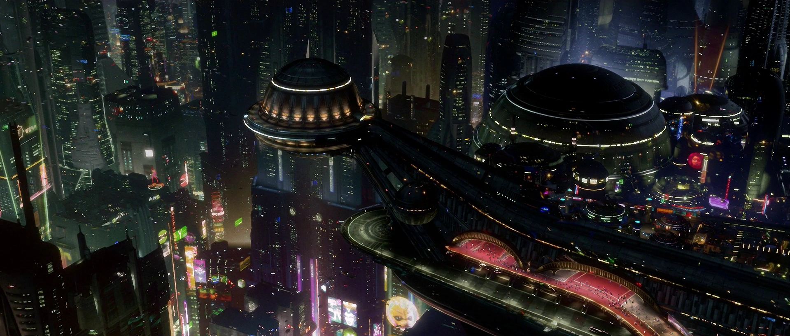

Ciudad por niveles
Miles de niveles apilados, desde el 0, deshabitado, hasta el 5127, la superficie principal.
Su historia, sus barrios y sus costumbres: lo que conviene saber antes de aterrizar.
Datos claveMiles de niveles apilados, desde el 0, deshabitado, hasta el 5127, la superficie principal.
Los vehículos circulan por carriles organizados según la altura.
Arriba, luz natural y clima regulado. Abajo, iluminación artificial permanente.
Comercios, transporte y servicios funcionan las 24 horas, todos los días.
